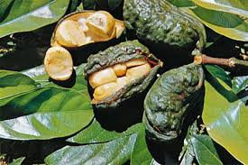
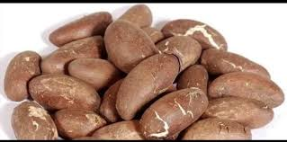

The cola nut, a gift from the rainforests of West Africa, is a bitter yet refreshing nut with a long history in African cultures. It grows on the kola tree, native to contries like Nigeria, Ghana andSierra Leone.

Ways to Enjoy Cola Nuts:
Chewing raw: Traditionally, kola nuts are chewed raw for stimulating effect. The bitterness is often masked with sugar or kola nut candies.
beverages: Kola nuts are used to make a variety of refreshing drinks. They can be boiled with water and spices for a homemade beverage or used as a flavouring in commercially produced sodas.
Ground into powder: Kola nut powder is used in ceremonies and rituals in some African cultures. It can also be added to food or drinks for extra caffeine boost.
**Social Significance:** Kola nuts hold cultural significance in many West African societies. They are often offered to guests as a sign of hospitality and respect. They are also used in traditional ceremonies and celebrations.

Health Benefits (Disclaimer: Consult a doctor before consuming):
1. Increased alertness: Kola nuts contain caffeine, which can improve alertness and focus.
2. Potential digestive benefits: Some studies suggest kola nuts may aid digestion.
3. Antioxidant properties: Kola nuts may have antioxidant properties that can benefit overall health (more research needed).
**Important Note:** While kola nuts offer potential benefits, it's crucial to consume them in modration due to the caffeine content. Consult a doctor before consuming kola nuts, especially if you have any underlying health conditions.